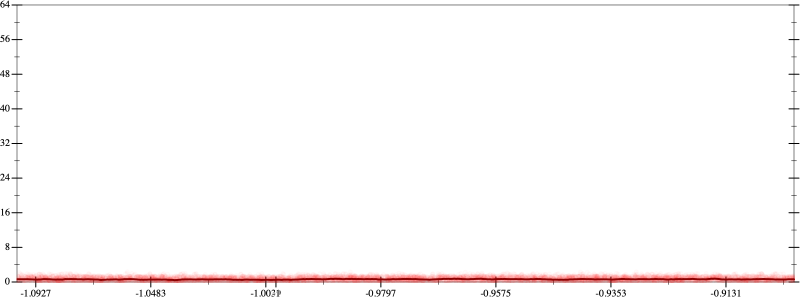
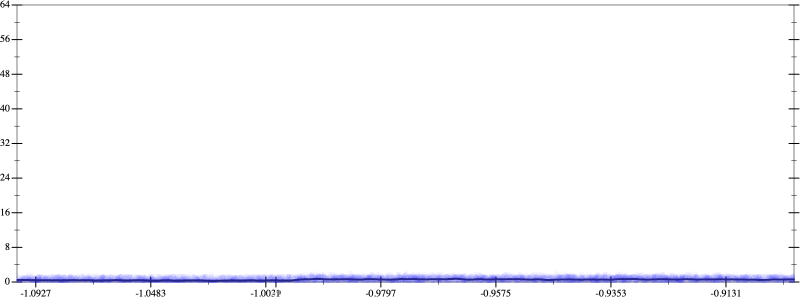
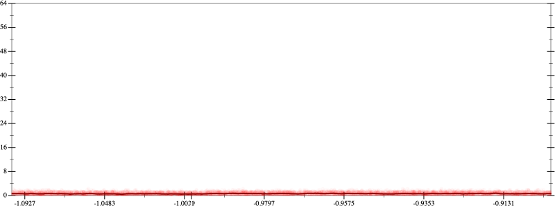
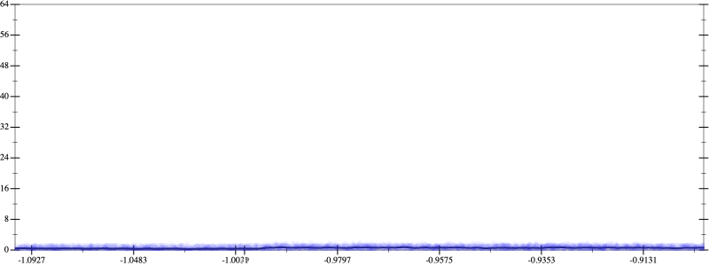

Initial program 0.6
\[\left(\left(\left(\left(\left(\left(\left(\left(1.0 + -10.0 \cdot x\right) + 22.5 \cdot \left(x \cdot x\right)\right) + -20.0 \cdot \left(\left(x \cdot x\right) \cdot x\right)\right) + 8.75 \cdot \left(\left(\left(x \cdot x\right) \cdot x\right) \cdot x\right)\right) + -2.1 \cdot \left(\left(\left(\left(x \cdot x\right) \cdot x\right) \cdot x\right) \cdot x\right)\right) + 0.291667 \cdot \left(\left(\left(\left(\left(x \cdot x\right) \cdot x\right) \cdot x\right) \cdot x\right) \cdot x\right)\right) + -0.02381 \cdot \left(\left(\left(\left(\left(\left(x \cdot x\right) \cdot x\right) \cdot x\right) \cdot x\right) \cdot x\right) \cdot x\right)\right) + 0.001116 \cdot \left(\left(\left(\left(\left(\left(\left(x \cdot x\right) \cdot x\right) \cdot x\right) \cdot x\right) \cdot x\right) \cdot x\right) \cdot x\right)\right) + -2.8 \cdot 10^{-05} \cdot \left(\left(\left(\left(\left(\left(\left(\left(x \cdot x\right) \cdot x\right) \cdot x\right) \cdot x\right) \cdot x\right) \cdot x\right) \cdot x\right) \cdot x\right)\]
Applied simplify0.5
\[\leadsto \color{blue}{\left(\left(\left(\left(x \cdot x\right) \cdot 0.291667\right) \cdot \left(\left(x \cdot x\right) \cdot \left(x \cdot x\right)\right) + \left(\left(x \cdot x\right) \cdot \left(x \cdot x\right)\right) \cdot \left(-2.1 \cdot x + 8.75\right)\right) + \left(\left(x \cdot -10.0 + 1.0\right) + \left(x \cdot x\right) \cdot \left(-20.0 \cdot x + 22.5\right)\right)\right) + \left(\left(\left(-0.02381 \cdot x\right) \cdot \left(x \cdot x\right)\right) \cdot \left(\left(x \cdot x\right) \cdot \left(x \cdot x\right)\right) + \left(\left(\left(x \cdot x\right) \cdot \left(x \cdot x\right)\right) \cdot \left(\left(x \cdot x\right) \cdot \left(x \cdot x\right)\right)\right) \cdot \left(-2.8 \cdot 10^{-05} \cdot x + 0.001116\right)\right)}\]
Taylor expanded around 0 0.5
\[\leadsto \left(\left(\left(\left(x \cdot x\right) \cdot 0.291667\right) \cdot \left(\left(x \cdot x\right) \cdot \left(x \cdot x\right)\right) + \left(\left(x \cdot x\right) \cdot \left(x \cdot x\right)\right) \cdot \left(-2.1 \cdot x + 8.75\right)\right) + \left(\left(x \cdot -10.0 + 1.0\right) + \left(x \cdot x\right) \cdot \left(-20.0 \cdot x + 22.5\right)\right)\right) + \left(\left(\left(-0.02381 \cdot x\right) \cdot \left(x \cdot x\right)\right) \cdot \left(\left(x \cdot x\right) \cdot \left(x \cdot x\right)\right) + \left(\color{blue}{{x}^{4}} \cdot \left(\left(x \cdot x\right) \cdot \left(x \cdot x\right)\right)\right) \cdot \left(-2.8 \cdot 10^{-05} \cdot x + 0.001116\right)\right)\]
Applied simplify0.5
\[\leadsto \color{blue}{\left(\left(\left(x \cdot -2.8 \cdot 10^{-05} + 0.001116\right) \cdot \left(\left(x \cdot x\right) \cdot \left(x \cdot x\right)\right)\right) \cdot {x}^{4} + \left(\left(x \cdot x\right) \cdot \left(22.5 + -20.0 \cdot x\right) + \left(1.0 + -10.0 \cdot x\right)\right)\right) + \left(\left(x \cdot x\right) \cdot \left(x \cdot x\right)\right) \cdot \left(\left(0.291667 \cdot \left(x \cdot x\right) + \left(8.75 + x \cdot -2.1\right)\right) + \left(x \cdot x\right) \cdot \left(x \cdot -0.02381\right)\right)}\]
- Using strategy
rm Applied pow20.5
\[\leadsto \left(\left(\left(x \cdot -2.8 \cdot 10^{-05} + 0.001116\right) \cdot \left(\left(x \cdot x\right) \cdot \left(x \cdot x\right)\right)\right) \cdot {x}^{4} + \left(\left(x \cdot x\right) \cdot \left(22.5 + -20.0 \cdot x\right) + \left(1.0 + -10.0 \cdot x\right)\right)\right) + \left(\left(x \cdot x\right) \cdot \color{blue}{{x}^{2}}\right) \cdot \left(\left(0.291667 \cdot \left(x \cdot x\right) + \left(8.75 + x \cdot -2.1\right)\right) + \left(x \cdot x\right) \cdot \left(x \cdot -0.02381\right)\right)\]
Applied pow20.5
\[\leadsto \left(\left(\left(x \cdot -2.8 \cdot 10^{-05} + 0.001116\right) \cdot \left(\left(x \cdot x\right) \cdot \left(x \cdot x\right)\right)\right) \cdot {x}^{4} + \left(\left(x \cdot x\right) \cdot \left(22.5 + -20.0 \cdot x\right) + \left(1.0 + -10.0 \cdot x\right)\right)\right) + \left(\color{blue}{{x}^{2}} \cdot {x}^{2}\right) \cdot \left(\left(0.291667 \cdot \left(x \cdot x\right) + \left(8.75 + x \cdot -2.1\right)\right) + \left(x \cdot x\right) \cdot \left(x \cdot -0.02381\right)\right)\]
Applied pow-prod-up0.5
\[\leadsto \left(\left(\left(x \cdot -2.8 \cdot 10^{-05} + 0.001116\right) \cdot \left(\left(x \cdot x\right) \cdot \left(x \cdot x\right)\right)\right) \cdot {x}^{4} + \left(\left(x \cdot x\right) \cdot \left(22.5 + -20.0 \cdot x\right) + \left(1.0 + -10.0 \cdot x\right)\right)\right) + \color{blue}{{x}^{\left(2 + 2\right)}} \cdot \left(\left(0.291667 \cdot \left(x \cdot x\right) + \left(8.75 + x \cdot -2.1\right)\right) + \left(x \cdot x\right) \cdot \left(x \cdot -0.02381\right)\right)\]
- Using strategy
rm Applied add-cube-cbrt0.5
\[\leadsto \left(\left(\left(x \cdot -2.8 \cdot 10^{-05} + 0.001116\right) \cdot \left(\left(x \cdot x\right) \cdot \left(x \cdot x\right)\right)\right) \cdot {x}^{4} + \left(\left(x \cdot x\right) \cdot \left(22.5 + -20.0 \cdot x\right) + \left(1.0 + -10.0 \cdot x\right)\right)\right) + {x}^{\left(2 + 2\right)} \cdot \color{blue}{\left(\left(\sqrt[3]{\left(0.291667 \cdot \left(x \cdot x\right) + \left(8.75 + x \cdot -2.1\right)\right) + \left(x \cdot x\right) \cdot \left(x \cdot -0.02381\right)} \cdot \sqrt[3]{\left(0.291667 \cdot \left(x \cdot x\right) + \left(8.75 + x \cdot -2.1\right)\right) + \left(x \cdot x\right) \cdot \left(x \cdot -0.02381\right)}\right) \cdot \sqrt[3]{\left(0.291667 \cdot \left(x \cdot x\right) + \left(8.75 + x \cdot -2.1\right)\right) + \left(x \cdot x\right) \cdot \left(x \cdot -0.02381\right)}\right)}\]
Applied associate-*r*0.5
\[\leadsto \left(\left(\left(x \cdot -2.8 \cdot 10^{-05} + 0.001116\right) \cdot \left(\left(x \cdot x\right) \cdot \left(x \cdot x\right)\right)\right) \cdot {x}^{4} + \left(\left(x \cdot x\right) \cdot \left(22.5 + -20.0 \cdot x\right) + \left(1.0 + -10.0 \cdot x\right)\right)\right) + \color{blue}{\left({x}^{\left(2 + 2\right)} \cdot \left(\sqrt[3]{\left(0.291667 \cdot \left(x \cdot x\right) + \left(8.75 + x \cdot -2.1\right)\right) + \left(x \cdot x\right) \cdot \left(x \cdot -0.02381\right)} \cdot \sqrt[3]{\left(0.291667 \cdot \left(x \cdot x\right) + \left(8.75 + x \cdot -2.1\right)\right) + \left(x \cdot x\right) \cdot \left(x \cdot -0.02381\right)}\right)\right) \cdot \sqrt[3]{\left(0.291667 \cdot \left(x \cdot x\right) + \left(8.75 + x \cdot -2.1\right)\right) + \left(x \cdot x\right) \cdot \left(x \cdot -0.02381\right)}}\]
Applied simplify0.5
\[\leadsto \left(\left(\left(x \cdot -2.8 \cdot 10^{-05} + 0.001116\right) \cdot \left(\left(x \cdot x\right) \cdot \left(x \cdot x\right)\right)\right) \cdot {x}^{4} + \left(\left(x \cdot x\right) \cdot \left(22.5 + -20.0 \cdot x\right) + \left(1.0 + -10.0 \cdot x\right)\right)\right) + \color{blue}{\left(\left({x}^{\left(2 + 2\right)} \cdot \sqrt[3]{\left(-0.02381 \cdot x + 0.291667\right) \cdot \left(x \cdot x\right) + \left(x \cdot -2.1 + 8.75\right)}\right) \cdot \sqrt[3]{\left(-0.02381 \cdot x + 0.291667\right) \cdot \left(x \cdot x\right) + \left(x \cdot -2.1 + 8.75\right)}\right)} \cdot \sqrt[3]{\left(0.291667 \cdot \left(x \cdot x\right) + \left(8.75 + x \cdot -2.1\right)\right) + \left(x \cdot x\right) \cdot \left(x \cdot -0.02381\right)}\]
- Using strategy
rm Applied flip-+0.5
\[\leadsto \left(\left(\left(x \cdot -2.8 \cdot 10^{-05} + 0.001116\right) \cdot \left(\left(x \cdot x\right) \cdot \left(x \cdot x\right)\right)\right) \cdot {x}^{4} + \left(\left(x \cdot x\right) \cdot \left(22.5 + -20.0 \cdot x\right) + \left(1.0 + -10.0 \cdot x\right)\right)\right) + \left(\left({x}^{\left(2 + 2\right)} \cdot \sqrt[3]{\left(-0.02381 \cdot x + 0.291667\right) \cdot \left(x \cdot x\right) + \left(x \cdot -2.1 + 8.75\right)}\right) \cdot \sqrt[3]{\left(-0.02381 \cdot x + 0.291667\right) \cdot \left(x \cdot x\right) + \left(x \cdot -2.1 + 8.75\right)}\right) \cdot \sqrt[3]{\color{blue}{\frac{\left(0.291667 \cdot \left(x \cdot x\right) + \left(8.75 + x \cdot -2.1\right)\right) \cdot \left(0.291667 \cdot \left(x \cdot x\right) + \left(8.75 + x \cdot -2.1\right)\right) - \left(\left(x \cdot x\right) \cdot \left(x \cdot -0.02381\right)\right) \cdot \left(\left(x \cdot x\right) \cdot \left(x \cdot -0.02381\right)\right)}{\left(0.291667 \cdot \left(x \cdot x\right) + \left(8.75 + x \cdot -2.1\right)\right) - \left(x \cdot x\right) \cdot \left(x \cdot -0.02381\right)}}}\]
Applied cbrt-div0.5
\[\leadsto \left(\left(\left(x \cdot -2.8 \cdot 10^{-05} + 0.001116\right) \cdot \left(\left(x \cdot x\right) \cdot \left(x \cdot x\right)\right)\right) \cdot {x}^{4} + \left(\left(x \cdot x\right) \cdot \left(22.5 + -20.0 \cdot x\right) + \left(1.0 + -10.0 \cdot x\right)\right)\right) + \left(\left({x}^{\left(2 + 2\right)} \cdot \sqrt[3]{\left(-0.02381 \cdot x + 0.291667\right) \cdot \left(x \cdot x\right) + \left(x \cdot -2.1 + 8.75\right)}\right) \cdot \sqrt[3]{\left(-0.02381 \cdot x + 0.291667\right) \cdot \left(x \cdot x\right) + \left(x \cdot -2.1 + 8.75\right)}\right) \cdot \color{blue}{\frac{\sqrt[3]{\left(0.291667 \cdot \left(x \cdot x\right) + \left(8.75 + x \cdot -2.1\right)\right) \cdot \left(0.291667 \cdot \left(x \cdot x\right) + \left(8.75 + x \cdot -2.1\right)\right) - \left(\left(x \cdot x\right) \cdot \left(x \cdot -0.02381\right)\right) \cdot \left(\left(x \cdot x\right) \cdot \left(x \cdot -0.02381\right)\right)}}{\sqrt[3]{\left(0.291667 \cdot \left(x \cdot x\right) + \left(8.75 + x \cdot -2.1\right)\right) - \left(x \cdot x\right) \cdot \left(x \cdot -0.02381\right)}}}\]
Applied flip-+0.5
\[\leadsto \left(\left(\left(x \cdot -2.8 \cdot 10^{-05} + 0.001116\right) \cdot \left(\left(x \cdot x\right) \cdot \left(x \cdot x\right)\right)\right) \cdot {x}^{4} + \left(\left(x \cdot x\right) \cdot \left(22.5 + -20.0 \cdot x\right) + \left(1.0 + -10.0 \cdot x\right)\right)\right) + \left(\left({x}^{\left(2 + 2\right)} \cdot \sqrt[3]{\left(-0.02381 \cdot x + 0.291667\right) \cdot \left(x \cdot x\right) + \left(x \cdot -2.1 + 8.75\right)}\right) \cdot \sqrt[3]{\color{blue}{\frac{\left(\left(-0.02381 \cdot x + 0.291667\right) \cdot \left(x \cdot x\right)\right) \cdot \left(\left(-0.02381 \cdot x + 0.291667\right) \cdot \left(x \cdot x\right)\right) - \left(x \cdot -2.1 + 8.75\right) \cdot \left(x \cdot -2.1 + 8.75\right)}{\left(-0.02381 \cdot x + 0.291667\right) \cdot \left(x \cdot x\right) - \left(x \cdot -2.1 + 8.75\right)}}}\right) \cdot \frac{\sqrt[3]{\left(0.291667 \cdot \left(x \cdot x\right) + \left(8.75 + x \cdot -2.1\right)\right) \cdot \left(0.291667 \cdot \left(x \cdot x\right) + \left(8.75 + x \cdot -2.1\right)\right) - \left(\left(x \cdot x\right) \cdot \left(x \cdot -0.02381\right)\right) \cdot \left(\left(x \cdot x\right) \cdot \left(x \cdot -0.02381\right)\right)}}{\sqrt[3]{\left(0.291667 \cdot \left(x \cdot x\right) + \left(8.75 + x \cdot -2.1\right)\right) - \left(x \cdot x\right) \cdot \left(x \cdot -0.02381\right)}}\]
Applied cbrt-div0.5
\[\leadsto \left(\left(\left(x \cdot -2.8 \cdot 10^{-05} + 0.001116\right) \cdot \left(\left(x \cdot x\right) \cdot \left(x \cdot x\right)\right)\right) \cdot {x}^{4} + \left(\left(x \cdot x\right) \cdot \left(22.5 + -20.0 \cdot x\right) + \left(1.0 + -10.0 \cdot x\right)\right)\right) + \left(\left({x}^{\left(2 + 2\right)} \cdot \sqrt[3]{\left(-0.02381 \cdot x + 0.291667\right) \cdot \left(x \cdot x\right) + \left(x \cdot -2.1 + 8.75\right)}\right) \cdot \color{blue}{\frac{\sqrt[3]{\left(\left(-0.02381 \cdot x + 0.291667\right) \cdot \left(x \cdot x\right)\right) \cdot \left(\left(-0.02381 \cdot x + 0.291667\right) \cdot \left(x \cdot x\right)\right) - \left(x \cdot -2.1 + 8.75\right) \cdot \left(x \cdot -2.1 + 8.75\right)}}{\sqrt[3]{\left(-0.02381 \cdot x + 0.291667\right) \cdot \left(x \cdot x\right) - \left(x \cdot -2.1 + 8.75\right)}}}\right) \cdot \frac{\sqrt[3]{\left(0.291667 \cdot \left(x \cdot x\right) + \left(8.75 + x \cdot -2.1\right)\right) \cdot \left(0.291667 \cdot \left(x \cdot x\right) + \left(8.75 + x \cdot -2.1\right)\right) - \left(\left(x \cdot x\right) \cdot \left(x \cdot -0.02381\right)\right) \cdot \left(\left(x \cdot x\right) \cdot \left(x \cdot -0.02381\right)\right)}}{\sqrt[3]{\left(0.291667 \cdot \left(x \cdot x\right) + \left(8.75 + x \cdot -2.1\right)\right) - \left(x \cdot x\right) \cdot \left(x \cdot -0.02381\right)}}\]
Applied flip3-+0.5
\[\leadsto \left(\left(\left(x \cdot -2.8 \cdot 10^{-05} + 0.001116\right) \cdot \left(\left(x \cdot x\right) \cdot \left(x \cdot x\right)\right)\right) \cdot {x}^{4} + \left(\left(x \cdot x\right) \cdot \left(22.5 + -20.0 \cdot x\right) + \left(1.0 + -10.0 \cdot x\right)\right)\right) + \left(\left({x}^{\left(2 + 2\right)} \cdot \sqrt[3]{\left(-0.02381 \cdot x + 0.291667\right) \cdot \left(x \cdot x\right) + \color{blue}{\frac{{\left(x \cdot -2.1\right)}^{3} + {8.75}^{3}}{\left(x \cdot -2.1\right) \cdot \left(x \cdot -2.1\right) + \left(8.75 \cdot 8.75 - \left(x \cdot -2.1\right) \cdot 8.75\right)}}}\right) \cdot \frac{\sqrt[3]{\left(\left(-0.02381 \cdot x + 0.291667\right) \cdot \left(x \cdot x\right)\right) \cdot \left(\left(-0.02381 \cdot x + 0.291667\right) \cdot \left(x \cdot x\right)\right) - \left(x \cdot -2.1 + 8.75\right) \cdot \left(x \cdot -2.1 + 8.75\right)}}{\sqrt[3]{\left(-0.02381 \cdot x + 0.291667\right) \cdot \left(x \cdot x\right) - \left(x \cdot -2.1 + 8.75\right)}}\right) \cdot \frac{\sqrt[3]{\left(0.291667 \cdot \left(x \cdot x\right) + \left(8.75 + x \cdot -2.1\right)\right) \cdot \left(0.291667 \cdot \left(x \cdot x\right) + \left(8.75 + x \cdot -2.1\right)\right) - \left(\left(x \cdot x\right) \cdot \left(x \cdot -0.02381\right)\right) \cdot \left(\left(x \cdot x\right) \cdot \left(x \cdot -0.02381\right)\right)}}{\sqrt[3]{\left(0.291667 \cdot \left(x \cdot x\right) + \left(8.75 + x \cdot -2.1\right)\right) - \left(x \cdot x\right) \cdot \left(x \cdot -0.02381\right)}}\]
Applied flip3-+0.5
\[\leadsto \left(\left(\left(x \cdot -2.8 \cdot 10^{-05} + 0.001116\right) \cdot \left(\left(x \cdot x\right) \cdot \left(x \cdot x\right)\right)\right) \cdot {x}^{4} + \left(\left(x \cdot x\right) \cdot \left(22.5 + -20.0 \cdot x\right) + \left(1.0 + -10.0 \cdot x\right)\right)\right) + \left(\left({x}^{\left(2 + 2\right)} \cdot \sqrt[3]{\color{blue}{\frac{{\left(-0.02381 \cdot x\right)}^{3} + {0.291667}^{3}}{\left(-0.02381 \cdot x\right) \cdot \left(-0.02381 \cdot x\right) + \left(0.291667 \cdot 0.291667 - \left(-0.02381 \cdot x\right) \cdot 0.291667\right)}} \cdot \left(x \cdot x\right) + \frac{{\left(x \cdot -2.1\right)}^{3} + {8.75}^{3}}{\left(x \cdot -2.1\right) \cdot \left(x \cdot -2.1\right) + \left(8.75 \cdot 8.75 - \left(x \cdot -2.1\right) \cdot 8.75\right)}}\right) \cdot \frac{\sqrt[3]{\left(\left(-0.02381 \cdot x + 0.291667\right) \cdot \left(x \cdot x\right)\right) \cdot \left(\left(-0.02381 \cdot x + 0.291667\right) \cdot \left(x \cdot x\right)\right) - \left(x \cdot -2.1 + 8.75\right) \cdot \left(x \cdot -2.1 + 8.75\right)}}{\sqrt[3]{\left(-0.02381 \cdot x + 0.291667\right) \cdot \left(x \cdot x\right) - \left(x \cdot -2.1 + 8.75\right)}}\right) \cdot \frac{\sqrt[3]{\left(0.291667 \cdot \left(x \cdot x\right) + \left(8.75 + x \cdot -2.1\right)\right) \cdot \left(0.291667 \cdot \left(x \cdot x\right) + \left(8.75 + x \cdot -2.1\right)\right) - \left(\left(x \cdot x\right) \cdot \left(x \cdot -0.02381\right)\right) \cdot \left(\left(x \cdot x\right) \cdot \left(x \cdot -0.02381\right)\right)}}{\sqrt[3]{\left(0.291667 \cdot \left(x \cdot x\right) + \left(8.75 + x \cdot -2.1\right)\right) - \left(x \cdot x\right) \cdot \left(x \cdot -0.02381\right)}}\]
Applied associate-*l/0.5
\[\leadsto \left(\left(\left(x \cdot -2.8 \cdot 10^{-05} + 0.001116\right) \cdot \left(\left(x \cdot x\right) \cdot \left(x \cdot x\right)\right)\right) \cdot {x}^{4} + \left(\left(x \cdot x\right) \cdot \left(22.5 + -20.0 \cdot x\right) + \left(1.0 + -10.0 \cdot x\right)\right)\right) + \left(\left({x}^{\left(2 + 2\right)} \cdot \sqrt[3]{\color{blue}{\frac{\left({\left(-0.02381 \cdot x\right)}^{3} + {0.291667}^{3}\right) \cdot \left(x \cdot x\right)}{\left(-0.02381 \cdot x\right) \cdot \left(-0.02381 \cdot x\right) + \left(0.291667 \cdot 0.291667 - \left(-0.02381 \cdot x\right) \cdot 0.291667\right)}} + \frac{{\left(x \cdot -2.1\right)}^{3} + {8.75}^{3}}{\left(x \cdot -2.1\right) \cdot \left(x \cdot -2.1\right) + \left(8.75 \cdot 8.75 - \left(x \cdot -2.1\right) \cdot 8.75\right)}}\right) \cdot \frac{\sqrt[3]{\left(\left(-0.02381 \cdot x + 0.291667\right) \cdot \left(x \cdot x\right)\right) \cdot \left(\left(-0.02381 \cdot x + 0.291667\right) \cdot \left(x \cdot x\right)\right) - \left(x \cdot -2.1 + 8.75\right) \cdot \left(x \cdot -2.1 + 8.75\right)}}{\sqrt[3]{\left(-0.02381 \cdot x + 0.291667\right) \cdot \left(x \cdot x\right) - \left(x \cdot -2.1 + 8.75\right)}}\right) \cdot \frac{\sqrt[3]{\left(0.291667 \cdot \left(x \cdot x\right) + \left(8.75 + x \cdot -2.1\right)\right) \cdot \left(0.291667 \cdot \left(x \cdot x\right) + \left(8.75 + x \cdot -2.1\right)\right) - \left(\left(x \cdot x\right) \cdot \left(x \cdot -0.02381\right)\right) \cdot \left(\left(x \cdot x\right) \cdot \left(x \cdot -0.02381\right)\right)}}{\sqrt[3]{\left(0.291667 \cdot \left(x \cdot x\right) + \left(8.75 + x \cdot -2.1\right)\right) - \left(x \cdot x\right) \cdot \left(x \cdot -0.02381\right)}}\]
Applied frac-add0.5
\[\leadsto \left(\left(\left(x \cdot -2.8 \cdot 10^{-05} + 0.001116\right) \cdot \left(\left(x \cdot x\right) \cdot \left(x \cdot x\right)\right)\right) \cdot {x}^{4} + \left(\left(x \cdot x\right) \cdot \left(22.5 + -20.0 \cdot x\right) + \left(1.0 + -10.0 \cdot x\right)\right)\right) + \left(\left({x}^{\left(2 + 2\right)} \cdot \sqrt[3]{\color{blue}{\frac{\left(\left({\left(-0.02381 \cdot x\right)}^{3} + {0.291667}^{3}\right) \cdot \left(x \cdot x\right)\right) \cdot \left(\left(x \cdot -2.1\right) \cdot \left(x \cdot -2.1\right) + \left(8.75 \cdot 8.75 - \left(x \cdot -2.1\right) \cdot 8.75\right)\right) + \left(\left(-0.02381 \cdot x\right) \cdot \left(-0.02381 \cdot x\right) + \left(0.291667 \cdot 0.291667 - \left(-0.02381 \cdot x\right) \cdot 0.291667\right)\right) \cdot \left({\left(x \cdot -2.1\right)}^{3} + {8.75}^{3}\right)}{\left(\left(-0.02381 \cdot x\right) \cdot \left(-0.02381 \cdot x\right) + \left(0.291667 \cdot 0.291667 - \left(-0.02381 \cdot x\right) \cdot 0.291667\right)\right) \cdot \left(\left(x \cdot -2.1\right) \cdot \left(x \cdot -2.1\right) + \left(8.75 \cdot 8.75 - \left(x \cdot -2.1\right) \cdot 8.75\right)\right)}}}\right) \cdot \frac{\sqrt[3]{\left(\left(-0.02381 \cdot x + 0.291667\right) \cdot \left(x \cdot x\right)\right) \cdot \left(\left(-0.02381 \cdot x + 0.291667\right) \cdot \left(x \cdot x\right)\right) - \left(x \cdot -2.1 + 8.75\right) \cdot \left(x \cdot -2.1 + 8.75\right)}}{\sqrt[3]{\left(-0.02381 \cdot x + 0.291667\right) \cdot \left(x \cdot x\right) - \left(x \cdot -2.1 + 8.75\right)}}\right) \cdot \frac{\sqrt[3]{\left(0.291667 \cdot \left(x \cdot x\right) + \left(8.75 + x \cdot -2.1\right)\right) \cdot \left(0.291667 \cdot \left(x \cdot x\right) + \left(8.75 + x \cdot -2.1\right)\right) - \left(\left(x \cdot x\right) \cdot \left(x \cdot -0.02381\right)\right) \cdot \left(\left(x \cdot x\right) \cdot \left(x \cdot -0.02381\right)\right)}}{\sqrt[3]{\left(0.291667 \cdot \left(x \cdot x\right) + \left(8.75 + x \cdot -2.1\right)\right) - \left(x \cdot x\right) \cdot \left(x \cdot -0.02381\right)}}\]
Applied cbrt-div0.5
\[\leadsto \left(\left(\left(x \cdot -2.8 \cdot 10^{-05} + 0.001116\right) \cdot \left(\left(x \cdot x\right) \cdot \left(x \cdot x\right)\right)\right) \cdot {x}^{4} + \left(\left(x \cdot x\right) \cdot \left(22.5 + -20.0 \cdot x\right) + \left(1.0 + -10.0 \cdot x\right)\right)\right) + \left(\left({x}^{\left(2 + 2\right)} \cdot \color{blue}{\frac{\sqrt[3]{\left(\left({\left(-0.02381 \cdot x\right)}^{3} + {0.291667}^{3}\right) \cdot \left(x \cdot x\right)\right) \cdot \left(\left(x \cdot -2.1\right) \cdot \left(x \cdot -2.1\right) + \left(8.75 \cdot 8.75 - \left(x \cdot -2.1\right) \cdot 8.75\right)\right) + \left(\left(-0.02381 \cdot x\right) \cdot \left(-0.02381 \cdot x\right) + \left(0.291667 \cdot 0.291667 - \left(-0.02381 \cdot x\right) \cdot 0.291667\right)\right) \cdot \left({\left(x \cdot -2.1\right)}^{3} + {8.75}^{3}\right)}}{\sqrt[3]{\left(\left(-0.02381 \cdot x\right) \cdot \left(-0.02381 \cdot x\right) + \left(0.291667 \cdot 0.291667 - \left(-0.02381 \cdot x\right) \cdot 0.291667\right)\right) \cdot \left(\left(x \cdot -2.1\right) \cdot \left(x \cdot -2.1\right) + \left(8.75 \cdot 8.75 - \left(x \cdot -2.1\right) \cdot 8.75\right)\right)}}}\right) \cdot \frac{\sqrt[3]{\left(\left(-0.02381 \cdot x + 0.291667\right) \cdot \left(x \cdot x\right)\right) \cdot \left(\left(-0.02381 \cdot x + 0.291667\right) \cdot \left(x \cdot x\right)\right) - \left(x \cdot -2.1 + 8.75\right) \cdot \left(x \cdot -2.1 + 8.75\right)}}{\sqrt[3]{\left(-0.02381 \cdot x + 0.291667\right) \cdot \left(x \cdot x\right) - \left(x \cdot -2.1 + 8.75\right)}}\right) \cdot \frac{\sqrt[3]{\left(0.291667 \cdot \left(x \cdot x\right) + \left(8.75 + x \cdot -2.1\right)\right) \cdot \left(0.291667 \cdot \left(x \cdot x\right) + \left(8.75 + x \cdot -2.1\right)\right) - \left(\left(x \cdot x\right) \cdot \left(x \cdot -0.02381\right)\right) \cdot \left(\left(x \cdot x\right) \cdot \left(x \cdot -0.02381\right)\right)}}{\sqrt[3]{\left(0.291667 \cdot \left(x \cdot x\right) + \left(8.75 + x \cdot -2.1\right)\right) - \left(x \cdot x\right) \cdot \left(x \cdot -0.02381\right)}}\]
Applied associate-*r/0.5
\[\leadsto \left(\left(\left(x \cdot -2.8 \cdot 10^{-05} + 0.001116\right) \cdot \left(\left(x \cdot x\right) \cdot \left(x \cdot x\right)\right)\right) \cdot {x}^{4} + \left(\left(x \cdot x\right) \cdot \left(22.5 + -20.0 \cdot x\right) + \left(1.0 + -10.0 \cdot x\right)\right)\right) + \left(\color{blue}{\frac{{x}^{\left(2 + 2\right)} \cdot \sqrt[3]{\left(\left({\left(-0.02381 \cdot x\right)}^{3} + {0.291667}^{3}\right) \cdot \left(x \cdot x\right)\right) \cdot \left(\left(x \cdot -2.1\right) \cdot \left(x \cdot -2.1\right) + \left(8.75 \cdot 8.75 - \left(x \cdot -2.1\right) \cdot 8.75\right)\right) + \left(\left(-0.02381 \cdot x\right) \cdot \left(-0.02381 \cdot x\right) + \left(0.291667 \cdot 0.291667 - \left(-0.02381 \cdot x\right) \cdot 0.291667\right)\right) \cdot \left({\left(x \cdot -2.1\right)}^{3} + {8.75}^{3}\right)}}{\sqrt[3]{\left(\left(-0.02381 \cdot x\right) \cdot \left(-0.02381 \cdot x\right) + \left(0.291667 \cdot 0.291667 - \left(-0.02381 \cdot x\right) \cdot 0.291667\right)\right) \cdot \left(\left(x \cdot -2.1\right) \cdot \left(x \cdot -2.1\right) + \left(8.75 \cdot 8.75 - \left(x \cdot -2.1\right) \cdot 8.75\right)\right)}}} \cdot \frac{\sqrt[3]{\left(\left(-0.02381 \cdot x + 0.291667\right) \cdot \left(x \cdot x\right)\right) \cdot \left(\left(-0.02381 \cdot x + 0.291667\right) \cdot \left(x \cdot x\right)\right) - \left(x \cdot -2.1 + 8.75\right) \cdot \left(x \cdot -2.1 + 8.75\right)}}{\sqrt[3]{\left(-0.02381 \cdot x + 0.291667\right) \cdot \left(x \cdot x\right) - \left(x \cdot -2.1 + 8.75\right)}}\right) \cdot \frac{\sqrt[3]{\left(0.291667 \cdot \left(x \cdot x\right) + \left(8.75 + x \cdot -2.1\right)\right) \cdot \left(0.291667 \cdot \left(x \cdot x\right) + \left(8.75 + x \cdot -2.1\right)\right) - \left(\left(x \cdot x\right) \cdot \left(x \cdot -0.02381\right)\right) \cdot \left(\left(x \cdot x\right) \cdot \left(x \cdot -0.02381\right)\right)}}{\sqrt[3]{\left(0.291667 \cdot \left(x \cdot x\right) + \left(8.75 + x \cdot -2.1\right)\right) - \left(x \cdot x\right) \cdot \left(x \cdot -0.02381\right)}}\]
Applied frac-times0.5
\[\leadsto \left(\left(\left(x \cdot -2.8 \cdot 10^{-05} + 0.001116\right) \cdot \left(\left(x \cdot x\right) \cdot \left(x \cdot x\right)\right)\right) \cdot {x}^{4} + \left(\left(x \cdot x\right) \cdot \left(22.5 + -20.0 \cdot x\right) + \left(1.0 + -10.0 \cdot x\right)\right)\right) + \color{blue}{\frac{\left({x}^{\left(2 + 2\right)} \cdot \sqrt[3]{\left(\left({\left(-0.02381 \cdot x\right)}^{3} + {0.291667}^{3}\right) \cdot \left(x \cdot x\right)\right) \cdot \left(\left(x \cdot -2.1\right) \cdot \left(x \cdot -2.1\right) + \left(8.75 \cdot 8.75 - \left(x \cdot -2.1\right) \cdot 8.75\right)\right) + \left(\left(-0.02381 \cdot x\right) \cdot \left(-0.02381 \cdot x\right) + \left(0.291667 \cdot 0.291667 - \left(-0.02381 \cdot x\right) \cdot 0.291667\right)\right) \cdot \left({\left(x \cdot -2.1\right)}^{3} + {8.75}^{3}\right)}\right) \cdot \sqrt[3]{\left(\left(-0.02381 \cdot x + 0.291667\right) \cdot \left(x \cdot x\right)\right) \cdot \left(\left(-0.02381 \cdot x + 0.291667\right) \cdot \left(x \cdot x\right)\right) - \left(x \cdot -2.1 + 8.75\right) \cdot \left(x \cdot -2.1 + 8.75\right)}}{\sqrt[3]{\left(\left(-0.02381 \cdot x\right) \cdot \left(-0.02381 \cdot x\right) + \left(0.291667 \cdot 0.291667 - \left(-0.02381 \cdot x\right) \cdot 0.291667\right)\right) \cdot \left(\left(x \cdot -2.1\right) \cdot \left(x \cdot -2.1\right) + \left(8.75 \cdot 8.75 - \left(x \cdot -2.1\right) \cdot 8.75\right)\right)} \cdot \sqrt[3]{\left(-0.02381 \cdot x + 0.291667\right) \cdot \left(x \cdot x\right) - \left(x \cdot -2.1 + 8.75\right)}}} \cdot \frac{\sqrt[3]{\left(0.291667 \cdot \left(x \cdot x\right) + \left(8.75 + x \cdot -2.1\right)\right) \cdot \left(0.291667 \cdot \left(x \cdot x\right) + \left(8.75 + x \cdot -2.1\right)\right) - \left(\left(x \cdot x\right) \cdot \left(x \cdot -0.02381\right)\right) \cdot \left(\left(x \cdot x\right) \cdot \left(x \cdot -0.02381\right)\right)}}{\sqrt[3]{\left(0.291667 \cdot \left(x \cdot x\right) + \left(8.75 + x \cdot -2.1\right)\right) - \left(x \cdot x\right) \cdot \left(x \cdot -0.02381\right)}}\]
Applied frac-times0.5
\[\leadsto \left(\left(\left(x \cdot -2.8 \cdot 10^{-05} + 0.001116\right) \cdot \left(\left(x \cdot x\right) \cdot \left(x \cdot x\right)\right)\right) \cdot {x}^{4} + \left(\left(x \cdot x\right) \cdot \left(22.5 + -20.0 \cdot x\right) + \left(1.0 + -10.0 \cdot x\right)\right)\right) + \color{blue}{\frac{\left(\left({x}^{\left(2 + 2\right)} \cdot \sqrt[3]{\left(\left({\left(-0.02381 \cdot x\right)}^{3} + {0.291667}^{3}\right) \cdot \left(x \cdot x\right)\right) \cdot \left(\left(x \cdot -2.1\right) \cdot \left(x \cdot -2.1\right) + \left(8.75 \cdot 8.75 - \left(x \cdot -2.1\right) \cdot 8.75\right)\right) + \left(\left(-0.02381 \cdot x\right) \cdot \left(-0.02381 \cdot x\right) + \left(0.291667 \cdot 0.291667 - \left(-0.02381 \cdot x\right) \cdot 0.291667\right)\right) \cdot \left({\left(x \cdot -2.1\right)}^{3} + {8.75}^{3}\right)}\right) \cdot \sqrt[3]{\left(\left(-0.02381 \cdot x + 0.291667\right) \cdot \left(x \cdot x\right)\right) \cdot \left(\left(-0.02381 \cdot x + 0.291667\right) \cdot \left(x \cdot x\right)\right) - \left(x \cdot -2.1 + 8.75\right) \cdot \left(x \cdot -2.1 + 8.75\right)}\right) \cdot \sqrt[3]{\left(0.291667 \cdot \left(x \cdot x\right) + \left(8.75 + x \cdot -2.1\right)\right) \cdot \left(0.291667 \cdot \left(x \cdot x\right) + \left(8.75 + x \cdot -2.1\right)\right) - \left(\left(x \cdot x\right) \cdot \left(x \cdot -0.02381\right)\right) \cdot \left(\left(x \cdot x\right) \cdot \left(x \cdot -0.02381\right)\right)}}{\left(\sqrt[3]{\left(\left(-0.02381 \cdot x\right) \cdot \left(-0.02381 \cdot x\right) + \left(0.291667 \cdot 0.291667 - \left(-0.02381 \cdot x\right) \cdot 0.291667\right)\right) \cdot \left(\left(x \cdot -2.1\right) \cdot \left(x \cdot -2.1\right) + \left(8.75 \cdot 8.75 - \left(x \cdot -2.1\right) \cdot 8.75\right)\right)} \cdot \sqrt[3]{\left(-0.02381 \cdot x + 0.291667\right) \cdot \left(x \cdot x\right) - \left(x \cdot -2.1 + 8.75\right)}\right) \cdot \sqrt[3]{\left(0.291667 \cdot \left(x \cdot x\right) + \left(8.75 + x \cdot -2.1\right)\right) - \left(x \cdot x\right) \cdot \left(x \cdot -0.02381\right)}}}\]
Applied simplify0.5
\[\leadsto \left(\left(\left(x \cdot -2.8 \cdot 10^{-05} + 0.001116\right) \cdot \left(\left(x \cdot x\right) \cdot \left(x \cdot x\right)\right)\right) \cdot {x}^{4} + \left(\left(x \cdot x\right) \cdot \left(22.5 + -20.0 \cdot x\right) + \left(1.0 + -10.0 \cdot x\right)\right)\right) + \frac{\color{blue}{\sqrt[3]{\left(0.291667 \cdot \left(0.291667 - x \cdot -0.02381\right) + \left(x \cdot -0.02381\right) \cdot \left(x \cdot -0.02381\right)\right) \cdot \left({8.75}^{3} + {\left(-2.1 \cdot x\right)}^{3}\right) + \left(\left(-2.1 \cdot x\right) \cdot \left(-2.1 \cdot x\right) + \left(8.75 - -2.1 \cdot x\right) \cdot 8.75\right) \cdot \left(\left(x \cdot x\right) \cdot \left({0.291667}^{3} + {\left(x \cdot -0.02381\right)}^{3}\right)\right)} \cdot \left({x}^{\left(2 + 2\right)} \cdot \left(\sqrt[3]{\left(\left(x \cdot 0.291667\right) \cdot x + \left(8.75 + -2.1 \cdot x\right)\right) \cdot \left(\left(x \cdot 0.291667\right) \cdot x + \left(8.75 + -2.1 \cdot x\right)\right) - \left(\left(x \cdot x\right) \cdot \left(x \cdot -0.02381\right)\right) \cdot \left(\left(x \cdot x\right) \cdot \left(x \cdot -0.02381\right)\right)} \cdot \sqrt[3]{\left(\left(x \cdot -0.02381 + 0.291667\right) \cdot \left(x \cdot x\right) + \left(8.75 + -2.1 \cdot x\right)\right) \cdot \left(\left(x \cdot -0.02381 + 0.291667\right) \cdot \left(x \cdot x\right) - \left(8.75 + -2.1 \cdot x\right)\right)}\right)\right)}}{\left(\sqrt[3]{\left(\left(-0.02381 \cdot x\right) \cdot \left(-0.02381 \cdot x\right) + \left(0.291667 \cdot 0.291667 - \left(-0.02381 \cdot x\right) \cdot 0.291667\right)\right) \cdot \left(\left(x \cdot -2.1\right) \cdot \left(x \cdot -2.1\right) + \left(8.75 \cdot 8.75 - \left(x \cdot -2.1\right) \cdot 8.75\right)\right)} \cdot \sqrt[3]{\left(-0.02381 \cdot x + 0.291667\right) \cdot \left(x \cdot x\right) - \left(x \cdot -2.1 + 8.75\right)}\right) \cdot \sqrt[3]{\left(0.291667 \cdot \left(x \cdot x\right) + \left(8.75 + x \cdot -2.1\right)\right) - \left(x \cdot x\right) \cdot \left(x \cdot -0.02381\right)}}\]
Applied simplify0.5
\[\leadsto \left(\left(\left(x \cdot -2.8 \cdot 10^{-05} + 0.001116\right) \cdot \left(\left(x \cdot x\right) \cdot \left(x \cdot x\right)\right)\right) \cdot {x}^{4} + \left(\left(x \cdot x\right) \cdot \left(22.5 + -20.0 \cdot x\right) + \left(1.0 + -10.0 \cdot x\right)\right)\right) + \frac{\sqrt[3]{\left(0.291667 \cdot \left(0.291667 - x \cdot -0.02381\right) + \left(x \cdot -0.02381\right) \cdot \left(x \cdot -0.02381\right)\right) \cdot \left({8.75}^{3} + {\left(-2.1 \cdot x\right)}^{3}\right) + \left(\left(-2.1 \cdot x\right) \cdot \left(-2.1 \cdot x\right) + \left(8.75 - -2.1 \cdot x\right) \cdot 8.75\right) \cdot \left(\left(x \cdot x\right) \cdot \left({0.291667}^{3} + {\left(x \cdot -0.02381\right)}^{3}\right)\right)} \cdot \left({x}^{\left(2 + 2\right)} \cdot \left(\sqrt[3]{\left(\left(x \cdot 0.291667\right) \cdot x + \left(8.75 + -2.1 \cdot x\right)\right) \cdot \left(\left(x \cdot 0.291667\right) \cdot x + \left(8.75 + -2.1 \cdot x\right)\right) - \left(\left(x \cdot x\right) \cdot \left(x \cdot -0.02381\right)\right) \cdot \left(\left(x \cdot x\right) \cdot \left(x \cdot -0.02381\right)\right)} \cdot \sqrt[3]{\left(\left(x \cdot -0.02381 + 0.291667\right) \cdot \left(x \cdot x\right) + \left(8.75 + -2.1 \cdot x\right)\right) \cdot \left(\left(x \cdot -0.02381 + 0.291667\right) \cdot \left(x \cdot x\right) - \left(8.75 + -2.1 \cdot x\right)\right)}\right)\right)}{\color{blue}{\left(\sqrt[3]{\left(0.291667 + -0.02381 \cdot x\right) \cdot \left(x \cdot x\right) - \left(8.75 + -2.1 \cdot x\right)} \cdot \sqrt[3]{\left(x \cdot x\right) \cdot \left(0.291667 - -0.02381 \cdot x\right) + \left(8.75 + -2.1 \cdot x\right)}\right) \cdot \sqrt[3]{\left(\left(8.75 - -2.1 \cdot x\right) \cdot 8.75 + \left(-2.1 \cdot x\right) \cdot \left(-2.1 \cdot x\right)\right) \cdot \left(\left(-0.02381 \cdot x\right) \cdot \left(-0.02381 \cdot x\right) + \left(0.291667 - -0.02381 \cdot x\right) \cdot 0.291667\right)}}}\]
 
